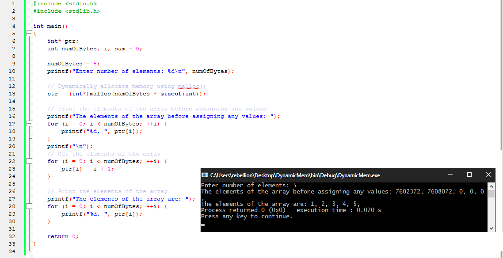
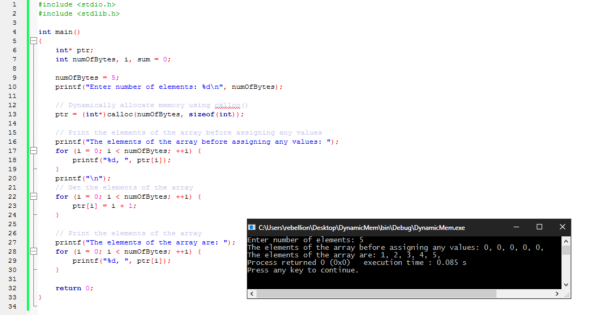
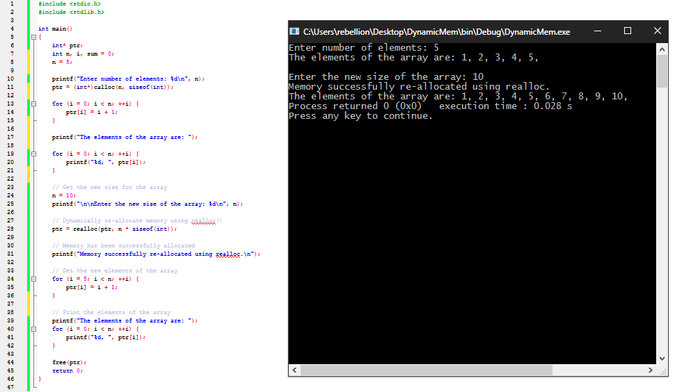
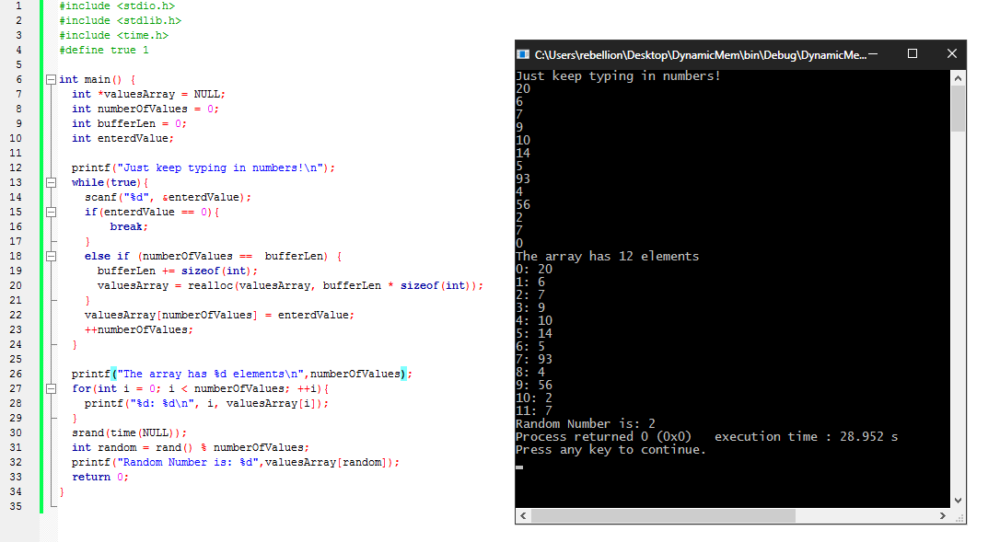

في لغة C يتم التعامل مع البيانات عن طريق اربع مناطق في الذاكرة. منطقة البيانات الثابتة constant data area ، منطقة البيانات ذات المدي الثابت static-extent data area ، المكدس stack و الـ heap.
في منطقة البيانات الثابتة يتم تخزين الثوابت النصية و البيانات الآخري المعروفة للمترجم Compiler اثناء عملية التجميع compilation، هذه المنطقة من الذاكرة تمتلك الأذن فقط بالقراءة read-only permission ولا يمكن لأي جزء آخر من البرنامج التعديل عليها اثناء تشغيله.
في منطقة البيانات ذات المدي الثابت يتم تخزين المتغيرات التي تم تعريفها بستخدام extern او static، مما يترتب عليه وجودها في الذاكرة طوال فترة تشغيل البرنامج، هذه المنطقة من الذاكرة تمتلك الأذونات بالقراءة و التعديل عليها read-writable permissions. و يتم تعيين منطقة البيانات الثابتة و منطقة البيانات ذات المدي الثابت منذ بداية البرنامج حتي إنتهاء تشغيله و يتم تحديد و ادارة عملهم من قبل المترجم اثناء عملية التجميع.
بالنسبة لمنطقة الذاكرة المعروفة بالمكدس Stack فتستخدم لتخزين المتغيرات المحلية (التي تمتلك مدي تلقائي)، حيث يتم التعريف عن المتغير و تعيين قيمته داخل الدالة و بعد انتهاء عمل الدالة يتم تفريغ تلك المساحة من الذاكرة بداية من أخر قيمة تم اضافتها له حتي اول قيمة بسبب كون المكدس من النوع Last in first out LIFO . المكدس هو الآخر يتم ادارته بشكل كامل من قبل المترجم.
اما عن الـ Heap فيتم استخدامه في تخصيص الذاكرة بشكل ديناميكي و يتم ادارتها من قبل المبرمج بدلا من المترجم. و يتم تعيين و تفريغ البيانات من الـ Heap عن طريق استخدام مجموعة من دوال المكتبة القياسية، و يترك للمبرمج كامل السيطرة علي عمر تلك البيانات داخل الذاكرة. وبسبب ان ادارة الـ Heap تقع علي المبرمج ولا يتم مراجعة صحة ادارتها من قبل المترجم ، تزيد احتمالية وجود اخطاء الذاكرة الديناميكية dynamic memory errors.
توفر المكتبة القياسية دوال لتخصيص و وتفريع الذاكرة بشكل ديناميكي هم ()malloc و ()free و ()calloc و ()realloc و هم جزء من الملف الرأسي stdlib.h.
تمتلك ()malloc الـ function prototype التالي:
void *malloc(size_t size);حيث يمثل الـ size حجم الـ bytes المطلوب تخصيصها في الذاكرة، و القيمة العائدة من تلك الدالة هي مؤشر للمساحة التي تم تخصيصها. لاحظ ان المؤشر العائد
من نوع * void مما يشير الي امكانية تعيين قيمة في تلك المساحة المخصصة من اي نوع بيانات. مثال لإنشاء مصفوفة من عشرة ارقام يمكننا كتابة السطر التالي:
xxxxxxxxxxint *p = malloc(10 * sizeof(int)); /* allocate bytes for 10 integers */لاحظ استخدام sizeof مع نوع البيانات المطلوب int مضروب في عدد عناصر المصفوفة 10 هذا بسبب ان المساحة المطلوب تخصيصها في الذاكر ستخزن قيمة من نوع int. المثال السابق يعمل جيدا ولكن غالبا ما يفضل استخدام الـ casts ليكون الملف المصدري اوضح اثناء قرائته.
xxxxxxxxxxint *p = (int *) malloc(10 * sizeof(int));المثال التالي يوضح استخدام ()malloc لإنشاء مصفوفة من الأرقام الصحيحة تحتوي علي خمس عنصار:
x
int main(){ int* ptr; int numOfBytes, i, sum = 0; numOfBytes = 5; printf("Enter number of elements: %d\n", numOfBytes); // Dynamically allocate memory using malloc() ptr = (int*)malloc(numOfBytes * sizeof(int)); // Get the elements of the array for (i = 0; i < numOfBytes; ++i) { ptr[i] = i + 1; } // Print the elements of the array printf("The elements of the array are: "); for (i = 0; i < numOfBytes; ++i) { printf("%d, ", ptr[i]); } return 0;}
تتشابه كثيرا ()calloc مع ()malloc لكن تختلف في القيمة المرجعة فبينما تعيد ()malloc مؤشر لمساحة من ذاكرة غير مهيء uninitialised memory block يحتوي علي قيم عشوائية من البيانات، تقوم ()calloc بتهئية initialise المساحة المطلوبة من الذاكرة بإعطائها القيمة 0. اما بالنسبة للـ function prototype فيختلف قليلا عن ()malloc لانه يأخذ وسيطين علي الشكل التالي:
x
void *calloc(size_t n, size_t size);حيث يحدد اول وسيط كم المساحة المطلوب تخصيصها من نوع بيانات معين. و يحدد ثاني وسيط حجم نوع البيانات لتلك المساحة. نفس المثال السابق بستخدام ()calloc:
x
int main(){ int* ptr; int numOfBytes, i, sum = 0; numOfBytes = 5; printf("Enter number of elements: %d\n", numOfBytes); // Dynamically allocate memory using calloc() ptr = (int*)calloc(numOfBytes, sizeof(int)); // Print the elements of the array before assigning any values printf("The elements of the array before assigning any values: "); for (i = 0; i < numOfBytes; ++i) { printf("%d, ", ptr[i]); } printf("\n"); // Get the elements of the array for (i = 0; i < numOfBytes; ++i) { ptr[i] = i + 1; } // Print the elements of the array printf("The elements of the array are: "); for (i = 0; i < numOfBytes; ++i) { printf("%d, ", ptr[i]); } return 0;}
اما بالنسبة لإلغاء تخصيص مساحة الذاكرة السابق تخصيصها بستخدام ()malloc او ()calloc و إرجاعها الي الـ heap نقوم بستخدام ()free. تمتلك الدالة ()free الـ function prototype التالي:
xxxxxxxxxxvoid free(void *);المثال التالي يوضح استخدام ()free لإلغاء تخصيص مصفوفتين بحجم خمسة عنصار من نوع int تم إنشاءهم بستخدام ()calloc و ()malloc:
x
int main(){ int *ptr, *ptr1; int n, i, sum = 0; n = 5; printf("Enter number of elements: %d\n", n); ptr = (int*)malloc(n * sizeof(int)); ptr1 = (int*)calloc(n, sizeof(int)); // Free the memory free(ptr); printf("Malloc Memory successfully freed.\n"); // Free the memory free(ptr1); printf("Calloc Memory successfully freed.\n"); return 0;}
و تستخدم ()realloc لإعادة تخصيص مساحة من الذاكرة، بمعني آخر تُئستخدم لتغيير حجم الذاكرة التي تم تخصيصها بشكل ديناميكي بواسطة ()malloc او ()calloc او حتي ()realloc نفسها. و يأخذ الـ function prototype الخاص بها الشكل التالي:
x
void *realloc(void *p, size_t size);حيث يمثل المؤشر p المؤشر لعنوان الذاكرة السابق تخصيصها و الـ size المساحة الجديدة لذلك العنوان. اما بالنسبة للقيمة المرجعة فتكون مؤشر لنفس عنوان الذاكرة. في حالة مساواة الـ size لـ 0 ستعمل ()realloc كـ ()free و سيتم إلغاء تخصيص المساحة. استخدام ()realloc لا يغير محتوي الذاكرة المخصصة، في حالة كان حجم المساحة في الوسيط الثاني اقل من حجم المساحة التي يشير اليها المؤشر في الوسيط الأول سيتم التخلص من البيانات في المساحة الزائدة و ستترك البقية كما هي. و في حالة كانت المساحة اكبر من المساحة الحالية فسيتم زيادة مساحة الذاكرة المخصصة و ستترك القيم الموجودة بدون تعديل و المساحة الجديدة ستحتوي علي قيم عشوائية. مثال علي استخدام ()realloc لزيادة حجم مصفوفة من 5 عناصر لـ 10 عناصر:
x
int main(){ int* ptr; int n, i, sum = 0; n = 5; printf("Enter number of elements: %d\n", n); ptr = (int*)calloc(n, sizeof(int)); for (i = 0; i < n; ++i) { ptr[i] = i + 1; } printf("The elements of the array are: "); for (i = 0; i < n; ++i) { printf("%d, ", ptr[i]); } // Get the new size for the array n = 10; printf("\n\nEnter the new size of the array: %d\n", n); // Dynamically re-allocate memory using realloc() ptr = realloc(ptr, n * sizeof(int)); // Memory has been successfully allocated printf("Memory successfully re-allocated using realloc.\n"); // Get the new elements of the array for (i = 5; i < n; ++i) { ptr[i] = i + 1; } // Print the elements of the array printf("The elements of the array are: "); for (i = 0; i < n; ++i) { printf("%d, ", ptr[i]); } free(ptr); return 0;}
في لغة C تمتلك المصفوفات حجم عناصر ثابت. يتم تحديده اثناء عملية الترجمة، نفس الأمر ينطبق علي المصفوفات التي يتم تحديد عدد عناصرها بشكل ديناميكي (المصفوفات التي لا تمتلك رقم بين [] عند التعريف عنها). في بعض الحالات يكون من الأفضل امتلاك البرنامج لمصفوفة يمكن زيادة عدد عناصرها بشكل ديناميكي، هنا تظهر فائدة ما يمكن انه يوفره الـ heap. المثال التالي يقبل من المستخدم عدد غير محدد من الأرقام التي لا تساوي 0 و يقوم بتخزينهم بشكل ديناميكي داخل مصفوفة، في حالة ادخال الرقم 0 سيخرج البرنامج من حلقة while و يقوم بختيار عنصر من عناصر المصفوفة بشكل عشوائي و طباعتها.
x
int main() { int *valuesArray = NULL; int numberOfValues = 0; int bufferLen = 0; int enterdValue; printf("Just keep typing in numbers!\n"); while(true){ scanf("%d", &enterdValue); if(enterdValue == 0){ break; } else if (numberOfValues == bufferLen) { bufferLen += sizeof(int); valuesArray = realloc(valuesArray, bufferLen * sizeof(int)); } valuesArray[numberOfValues] = enterdValue; ++numberOfValues; } printf("The array has %d elements\n",numberOfValues); for(int i = 0; i < numberOfValues; ++i){ printf("%d: %d\n", i, valuesArray[i]); } srand(time(NULL)); int random = rand() % numberOfValues; printf("Random Number is: %d",valuesArray[random]); return 0;}